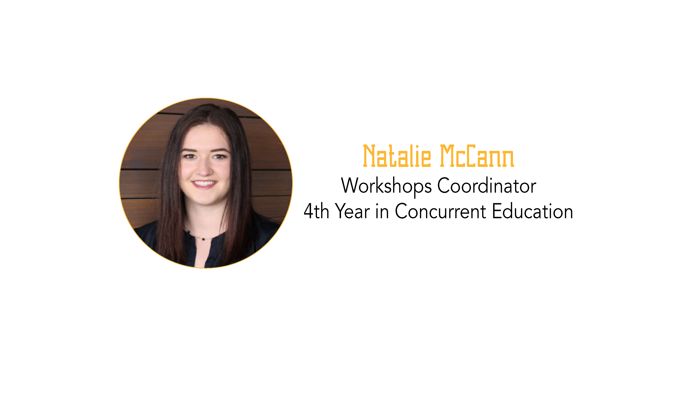

Being an Advocate for Advocacy
Natalie McCann - 25 October, 2017

Looking to get involved in philanthropy? Look no further! Here are my top 3 favorite organizations and initiatives to help spark your interest and find your passion!
#1: About a year ago, while browsing social media I came across a page called the Happy Soul Project. As a future teacher I was immediately drawn to this page run by a Kingston mother of 3 who is trying to redefine what it means to have a child with down syndrome. Although I encourage everyone to check out her blog, this isn’t meant to be a plug for the Happy Soul Project, rather it is about one of the many lessons this fantastic mother and advocate has taught me as I have followed her journey.
Though Tara has many initiatives on the go, I personally think her #BeAwesomeToday campaign is fantastic for many reasons. This campaign challenges individuals around the world to do something awesome for someone else on the 15th of every month, and I think this message is so important. Whether you are a part of #PipsArmy, or simply want to be involved in making social change, this is an easy way to use small actions to make big change!
#2: Another organization I’m a big fan of is Jack.org. Jack.org is a national organization of youth who are working to change the dialogue a surrounding mental health and mental illness. You may have heard by now the statistic that 1 in 5 people suffer from a mental illness but 5 and 5 people have mental health, and that is so true. One of my favorite aspects about mental health advocacy is that literally anyone can be an advocate! Jack.org is a great starting point if you want to find ways to get involved and make change within your community, but you can also simply involve yourself in the conversation and BOOM, you’re making change in normalizing the stigmas surround mental health.
Another great aspect to Jack.org is their fundraising initiatives. They’re all about getting out and getting moving! Jack.org runs a yearly Jack Ride, but you can also find other opportunities to get involved through charity walks/runs for mental health and mental illness.
#3: Last but not least is Youth Diversion. Fun fact, I actually first found out about Youth Diversion last year at QCOP, and wow what a great organization it is! Youth Diversion works to provide at risk youth with intervention and prevention services, in collaboration with the individuals’ family and community. One of the reasons I think this organization is so fantastic is the vast array of ways in which volunteers can get involved; whether it be through the SNAP program, the Rebound program, or simply mentoring 1:1 with a student, etc, this organization is the perfect way to make a positive impact on the future generation.
Although I think the three organizations mentioned above are fantastic, I encourage you to find your niche if you don’t see it here. If I have learned anything through working with the Queen’s Conference on Philanthropy it is that the possibilities are endless and there is something for everyone. A small idea and a lot of passion truly can go a long way, and I challenge you to find yours.